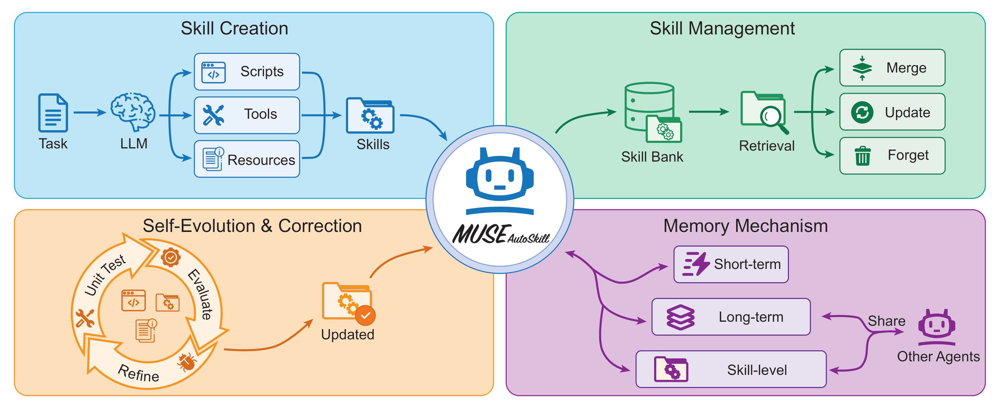
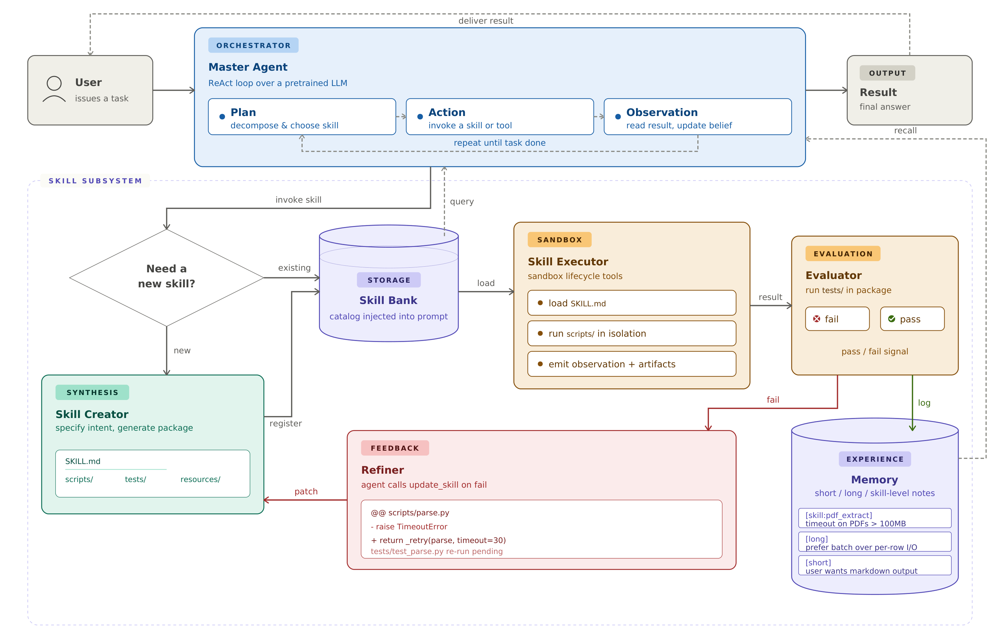
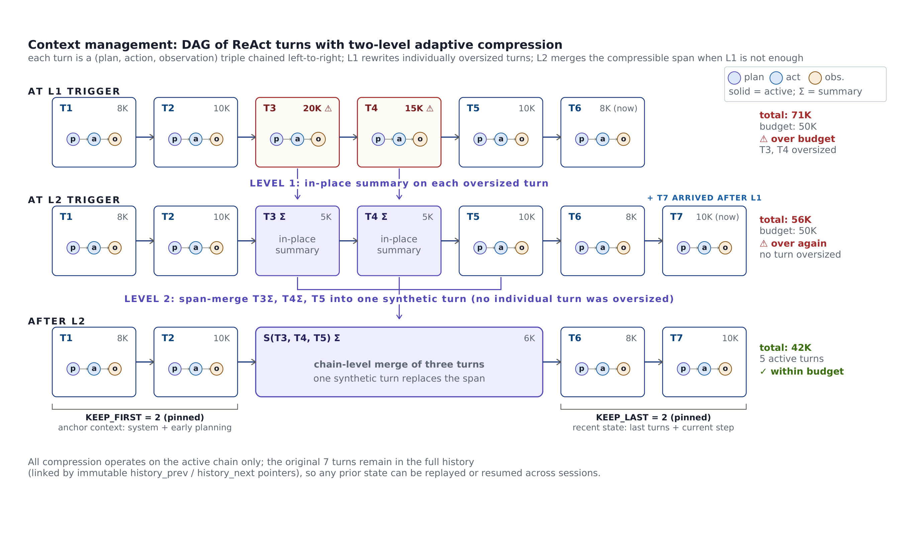
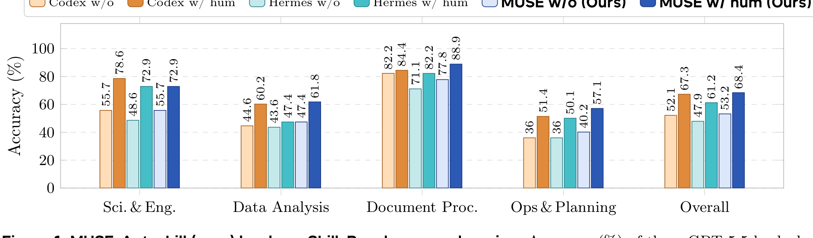
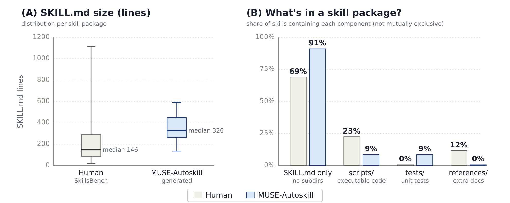

MUSE-Autoskill：把 skill 当成「有生命周期、可测试、可迁移」的资产
MUSE-Autoskill: Self-Evolving Agents via Skill Creation, Memory, Management, and Evaluation
skill_create 在 ReAct 循环里按需造 skill、用 tests/ 里的 unit test 做「create→evaluate→register」门控、给每个 skill 配一份 .memory.md 记录跨任务经验、并用基于 DAG 的两级自适应 context 压缩支撑长程任务。在 SkillsBench（51 个 Docker 自动判分任务）上，三个同用 GPT-5.5 的 agent 里 MUSE 拿到最高 with-skills 成绩 68.40%（比无 skill 的 53.19% 高 +15.21 pp）；它从自己成功轨迹蒸馏出的 skill 在能造出 skill 的 35 个任务上把准确率推到 87.94%（超过人写 skill 的天花板）；这些 skill 注入到另一个 agent（Hermes）还能带来 +10.51 pp、补上对人写 skill 差距的 79%。整个方法不做任何 fine-tune / RL，纯 inference-time。①开源贡献 Open-source Artifacts
截至本解读日（2026-05-30），未找到 MUSE-Autoskill 的任何公开仓库、权重或数据集。论文 arXiv abstract 页与 Hugging Face papers 页都没有挂出官方 code / model / dataset 链接，PDF 正文与 LaTeX source 中也只引用了 Anthropic 的 Agent Skills 标准仓库（外部依赖，非本文产物）。论文自述其设计「已在生产系统中部署」（SkillMarket / ArkClaw / SkillHub），但这些是 ByteDance 内部产品，并未对外开放。论文头部明确标注 work in progress，因此目前应视为未开源 / 暂不可独立复现。
| 类型 | 是否开源 | 内容 / 链接 |
|---|---|---|
| 代码 Code | ✘ | 未在论文 / arXiv / HF 页找到 MUSE-Autoskill 官方仓库；网络搜索引擎给出的 KnowledgeXLab/MUSE 经核实是另一篇不同论文（“Learning on the Job”, arXiv 2510.08002，与 ByteDance / Huawei Lin / SkillsBench 无关），故不予链接。 |
| 模型权重 Weights | ✘ | 无自训练模型；backbone 直接调用 GPT-5.5 (04/24/2026)，仅 API 形式，无权重发布。 |
| 数据集 Dataset | ✘ | 本文不构造数据集；评测用的 SkillsBench 是被引用的他人工作（[9]，arXiv 2602.12670），非本文贡献。 |
| 环境 / Benchmark | ✘ | 评测环境是 SkillsBench 的 Docker harness（他人维护）；本文的 agent runtime（MUSE）未释出。 |
| 项目主页 / Demo | ✘ | 无独立项目主页；提到的 SkillMarket / ArkClaw / SkillHub 为内部生产系统，无公开入口。 |
②研究动机与贡献 Motivation & Contribution
背景与问题：skill 正在成为 agent 的「能力单元」
LLM agent 越来越多地被用来解决要跨多步、跨工具、跨领域的真实任务。当任务规模变大，「只靠模型在 prompt 里裸推理」就不够了——agent 需要可复用的能力单元，也就是 skill：它把一段过程、一段可执行代码或一份领域知识封装起来，可以被组合进解法。skill 之所以吸引人，是因为它把「能力」从「模型权重」里解耦出来，让能力可以模块化执行、可以累积结构化领域知识，而不必每一步都靠人来手写指令。
但作者指出，现有「用 LLM 自动合成 skill」的这条线（从 Minecraft 里的 Voyager 的可执行代码库，到通用 agent 的 AutoSkill、EvoSkill、SkillGen，再到用 RL 联合优化 skill 的 Skill1、SkillOS，以及工业界 Anthropic 的 Agent Skills 标准）虽然各自能扩展 agent 的功能，却通常只覆盖 skill 生命周期的一部分，留下四个实际的硬伤：
- creation–usage mismatch（造与用脱节）：skill 是在 agent 的 runtime context 之外被「批量生成」的，造的时候看不到 agent 真实的执行上下文，导致造出来的 skill 不一定契合实际调用场景。
- no structured per-skill memory（没有结构化的 per-skill 记忆）：大多只有跨任务的自由文本经验（如 Reflexion / ExpeL 的 reflection），没有「绑定到某一个具体 skill」的记忆，无法沉淀「这个 skill 已知的失败模式、输入格式坑、性能注意点」。
- static, unvalidated skills（静态、未校验）：skill 生成后基本不带 unit-test 驱动的评测与自动 refinement，质量没有系统性保证。
- poor context handling（长程上下文处理差）：扁平的对话历史在长程任务上会被截断或溢出 context window。
本文的切入点：skill 不该是一次性产物，而是「有生命周期的资产」
作者的核心主张是：skill 应该被当成 agent 系统里长期存活、不断演化的资产（long-lived, evolving assets），而不是一次性的生成输出。一个好用的 skill，应当：① 在 agent 的推理循环内按需被创建；② 带着相关经验与 metadata 一起存储；③ 在情境相关时被检索出来，并通过 test 和 runtime feedback 验证；④ 随着新证据累积被持续 refine。作者把这个视角形式化为五阶段的统一 skill lifecycle：creation、memory、management、evaluation、refinement。这一重构把 skill 从「用完即弃的产物」变成了「可管理、可测试、可迁移的基础设施」——这正是 agent 想要跨任务、跨 session、甚至跨不同 agent 系统去累积经验所需要的底座。
核心贡献
- 提出 skill lifecycle 框架：把 skill 从一次性生成产物重新定义为有生命周期、可被管理的长期资产，明确指出任何实用的「以 skill 为中心」的 agent 系统都必须处理 creation / memory / management / evaluation / refinement 五个阶段（Table 1 用这五个阶段 + cross-agent + training-free 两个额外维度系统比较了 9 个相关方法，MUSE 是唯一全勾选的）。
- 提出 MUSE-Autoskill agent：一个以 skill 为中心、能随时间提升解题能力的 agent；它把 skill 创建与 runtime 执行紧耦合（内置
skill_create工具从 ReAct 循环内被调用，消除 creation–usage mismatch），用 unit test + feedback 评测 skill，并在 test 失败时自动触发 refinement。 - 提出配套基础设施：(i) 多级 memory，其中新增了一种 per-skill 的 skill-level memory（每个 skill 一份
.memory.md），跨任务累积该 skill 的经验；(ii) 带 cross-session 状态持久化的自适应 context 压缩；(iii) 让自动生成的 skill 可被其他 agent 直接使用的 cross-agent skill transfer。 - 给出 SkillsBench 上的实证：在三个同用 GPT-5.5 的 agent 中拿到最佳 with-skills 成绩（68.40%，+15.21 pp）；自生成 skill 在能造出 skill 的 35 个任务上达到 87.94%，超过人写 skill 天花板；生成的 skill 注入到另一个 agent 仍几乎无损迁移。
③方法 Method
MUSE-Autoskill（Memory-Utilizing Skill Evolution）整体是一个跑在预训练 LLM 之上的 ReAct agent：一个 Master Agent 在 Planning → Action → Observation 的循环里推进任务。关键在于——除了两个内置 skill（skill_create 与 web_search），其它所有能力都不是预定义的，必须通过 skill_create 现造，从而保证 agent 的能力是被动态构建、持续演化的。需要某个能力时，agent 要么从 Skill Bank 里检索一个现成 skill，要么调用 Skill Creator 合成一个新 skill 包，造完立刻被 Evaluator 用 unit test 校验：通过则进库、observation 回灌进 memory，失败则 Refiner 打补丁后重进循环。下图是这套生命周期的总览。


3.1 skill 的封装格式
一个 skill 是一个以 kebab-case 命名的自包含目录，沿用 Anthropic 的 Agent Skills 格式：顶层一定有一份带 YAML frontmatter 的 SKILL.md（定义 name / description / 何时使用 / 核心不变量 / 推荐工具 / workflow），可选地带 scripts/（可执行代码）、tests/（pytest 兼容的测试）、resources/（按需加载的数据/文档）、references/（参考文档）。运行时 agent 先读 SKILL.md 理解接口与 SOP，再决定是读 resources、跑 scripts，还是两者都来。用 skill 的好处是省 token：不必每次都重新生成详细推理步骤，调用一个短接口即可，还能跨任务复用、避免重复劳动。
name + description）注入 system prompt，遵循 Anthropic Agent Skills 的 progressive disclosure。SKILL.md 的正文只有当 agent 决定要用这个 skill、调 read_skill 时才被拉进 context。这样每次调用的输入成本相对 skill 库规模保持平坦：一个 100-skill 的库只增加 ~5–10K token 的 catalog，而不是把每个 skill 正文都装进来所需的 ~500K token。
3.2 Skill Creation：现造一个可执行 + 可测试的 skill 包
当现有 skill 不够用时，agent 给出对所需功能的高层规格（目的、输入、期望输出），系统按结构化 pipeline 构造 skill：先写 SKILL.md 定义接口，再规划内部结构（scripts/ resources/ tests/），最后生成对应文件，得到一个完整可执行的 skill 包。
3.3 Skill Evaluation & Refinement：create → evaluate → register 门控
造完之后，每个 skill 都要过一道评测门控：系统在 sandbox 里跑该 skill tests/ 目录里新写的 unit test，只有全部通过才把 skill 注册进 Skill Bank。如果 test 失败，agent 检查错误轨迹、调 update_skill 给包打补丁，再重跑 test。这个 create→evaluate→register 闭环保证只有可靠的 skill 才进库、可被未来任务复用，也使所有非内置功能都以「可复用、可校验、可改进」的 skill 形式存在。换句话说，「可测试」在 MUSE 里是一个系统性质（by construction），而不是作者的一种写作惯例——失败的 test 同时也是触发 refinement / 重新生成的信号。
3.4 Skill Execution：复用 agent 自己的 sandbox 工具
skill 执行就在 agent 的 ReAct 循环里完成。代码执行由一小组 sandbox 生命周期工具中介：create_sandbox、sandbox_run、sandbox_upload/sandbox_download、close_sandbox。每个 sandbox 是一个隔离的进程/容器，有自己的文件系统（默认根在 /sandbox，输入在 /sandbox/inputs/、产物在 /sandbox/outputs/），因此失败、副作用、资源占用都被限定在单次 skill 调用内。关键设计：不另起一套执行引擎，而是复用 agent 本来就在用的通用工具（文件读取、终端命令、sandbox 调用），既避免冗余基础设施，也让执行能借力 agent 的完整推理能力。
3.5 Memory：三级记忆，新增 per-skill 的 skill-level memory
memory 是 MUSE 累积能力的核心。它在前人分层记忆（MemGPT 的 OS 式分页、Generative Agents 的 memory stream + reflection、Reflexion/ExpeL 的跨 episode reflection）之上，新增了一层绑定到每个 SKILL.md 的 per-skill 记忆：
- Skill-level memory（本文新增）：Skill Bank 里每个 skill 都有一份兄弟文件
.memory.md，agent 把跨任务累积的笔记、教训、使用观察（如已知失败模式、输入格式坑、性能 caveat）append 进去。下次同一个 skill 被加载时，这份 per-skill 经验会和它的SKILL.md接口一起被呈现，让 agent 直接受益于过往经验、而不必重新推导。注意：.memory.md故意带前导点、且不随 skill 目录被.tar打包导出——即经验是 per-agent 的，迁移 skill 不迁移经验。 - Short-term memory：维护当前任务上下文（中间推理、observation、临时结果）。随 context 增长，它会被自适应压缩（见 3.6），以在不超 token budget 的前提下支撑长程任务。
- Long-term memory：跨 session 持久的笔记（可复用结论、环境怪癖、通用教训，如「偏好 batched I/O」「这个项目用 pinned 包版本」）。与 short-term 不同，long-term 不被压缩，是一个只增的经验库。
所有三种 memory 文件用同一种 append-only 的 Markdown 格式（一个时间戳标题 + 一段 agent 写的内容），只追加、不修改/删除已有条目，因而可被多 session 并发安全读取。
3.6 Context Management：把 ReAct 历史建成 DAG + 两级自适应压缩
这是支撑长程任务的关键机制。agent 把 context 维护成一张对话节点的 DAG，每个 turn 一个节点，记录该步的模型响应、tool 调用、per-call token 用量。每个节点带两套指针：一个可变的 parent_id 定义当前发给 LLM 的 active chain；一对不可变的 history_prev / history_next 定义原始 turn 的完整历史。active chain 永远是完整历史的一个子图。
当累积的 short-term context 超过 token budget 时，MUSE 做两级自适应压缩（总阈值 COMPRESS_TOKEN_THRESHOLD = 180K，留 ~10% 余量给一次压缩调用本身在 200K 硬上限内放得下；首尾各 KEEP_FIRST/KEEP_LAST = 5 个 turn 永远逐字保留，只有中间可被压缩）：
- Level-1（单节点压缩）：扫描 active chain，把单个 turn 的 token 占用超过 per-node 阈值（
NODE_COMPRESS_TOKEN_THRESHOLD= 15K，通常是某次 tool 输出特别大）的节点，原地替换成紧凑摘要、但保留它在链上的位置。 - Level-2（链压缩）：若 Level-1 后总量仍超预算，把一段连续的中间节点合并成一个合成摘要节点，顶替这些节点在 active chain 上的位置。
作者强调「总是先试 Level-1」，因为它破坏性更小：只重写超标节点的 payload，per-turn 边界与「plan/action/observation」结构都保留，后续 turn 仍能按原位置引用更早的 turn；Level-2 会把多个 turn 塌缩成一个、丢掉 per-turn 结构，所以只在单节点摘要救不回预算时才用。两级压缩都只作用在 active chain 上，原始节点始终留在完整历史里（靠不可变的 history_prev/history_next 串起来），因此任何被压缩过的运行都能被「replay」复现，状态也能跨 session 恢复。Long-term memory 和 Skill Bank 单独存放、不被压缩。作者还给出一个数据支撑这一设计：preliminary 实验里，简单截断（超预算就丢最老的中间 turn）会逼着 agent 在 30–40% 的情况下重新去取早期 context（如重查输入文件名、回忆解析格式），而摘要只用 ~1/10 的 token 成本就保住了这些事实。

3.7 Skill Management：refinement / merging / pruning + cross-session 快照
除了检索，Skill Bank 还靠三种机制持续维护：refinement（skill 跑 test 失败或执行时输出错误，agent 据错误反馈修订/重生成）、merging（新造的 skill 与已有 skill 显著重叠时，合并成一个更通用的 skill 以去冗余）、pruning（长期反复失败或长期不用的 skill 被剪掉）。这三者让 Skill Bank 随 skill 越积越多仍保持紧凑、可靠、可扩展。此外，每个 session 结束后 agent 的完整状态（对话历史、skill 使用记录、执行 metadata）被存成快照，于是任务可以从中间状态续跑、不必从头重来——这对可能跨多个 session 的长程工作流很关键。
GPT-5.5 (04/24/2026)，温度用 provider 默认（不覆盖采样）。压缩：COMPRESS_TOKEN_THRESHOLD=180K、NODE_COMPRESS_TOKEN_THRESHOLD=15K、KEEP_FIRST/KEEP_LAST=5。工具超时层级：TOOL_TIMEOUT=300s > VERIFY_COMPLETION_TIMEOUT=120s > TERMINAL/EXEC_CODE_TIMEOUT=60s；TOOL_TEXT_LIMIT=8192 字符（单次 tool 输出截断上限，防一个 log 文件刷爆 active chain）。MAX_RETRY=5（HTTP 429 指数退避预算）、VERIFY_COMPLETION_TURN_THRESHOLD=4（不足 4 个 turn 就想调 final_answer 会被强制先做一次 verify_completion，防过早收尾）。评测：每个「agent×任务×配置」独立跑 5 次，取平均 reward；环境出错的 run 排除，无输出的 run 记为 reward 0。
④实验评估 Evaluation
评测设置
- Benchmark：SkillsBench（[9]，被引用的他人工作），考察 agent 在真实任务上「带/不带 skill」的端到端任务准确率。每个任务跑在隔离的 Docker 容器里，由自动 verifier 检查最终输出文件、给出 $[0,1]$ 的 reward。本文选用 51 个所有参评 agent 都不会触发环境错误的任务（便于直接做 cross-agent 比较），覆盖四个 super-domain：Science & Engineering（14）、Data Analysis（15）、Document Processing（9）、Ops & Planning（13）。
- 对比基线：同样 backbone（GPT-5.5）下的另外两个 agent runtime——Codex（SkillsBench 评测 harness 自带的 CLI）与 Hermes（第三方 agent runtime）。三者共享同一个模型，因此差异反映的是 agent 系统设计（工具策略、context 管理、planning、skill 用法），而非模型容量。
- 评价指标：task-level reward 的 macro-average（每个任务等权，每任务 5 次 run 取平均），即 accuracy（%），越高越好。
- 三个对照条件：without skills（只靠 agent 自身知识）、with human skills（SkillsBench 任务设计者手写的领域 skill 注入工作区）、with generated skills（MUSE 从自己成功轨迹蒸馏出的 skill）。
主要结果（一）：skill 普遍有用，MUSE 用得最好
Table 2 的总览：所有 agent 用上人写 skill 都有 13–15 pp 的大幅提升，说明 skill 机制本身有效；而 MUSE 在带/不带 skill 两种条件下都最高，with human skills 达 68.40%。MUSE 与其它两个 agent 的差距说明它更擅长在推理循环里读懂、解读并应用 skill 内容。
| 方法（均用 GPT-5.5） | Without Skills | With Human Skills | Lift |
|---|---|---|---|
| Codex | 52.11% | 67.28% | +15.17 |
| Hermes | 47.89% | 61.21% | +13.33 |
| MUSE-Autoskill（本文） | 53.19% | 68.40% | +15.21 |
分 domain 看（Table 3 / 下图），MUSE 在 3/4 个 domain 拿到最高 with-skills 成绩（Data Analysis 61.78%、Document Processing 88.89%、Ops & Planning 57.08%）；唯一落后的是 Science & Engineering，被 Codex 高出 5.7 pp（78.57% vs 72.86%），原因是三个边界任务（lake-warming-attribution、flood-risk-analysis、radar-vital-signs）的 verifier 惩罚了任务规格里没钉死的方法学选择。

主要结果（二）：自生成 skill 在覆盖到的任务上超过人写 skill 天花板
这是本文最有意思的结果。自动造 skill 走两阶段协议：Phase 1 让 MUSE 在无 skill下解每个任务（5 次 run，复用上面的 without-skills 结果）；对至少有一次成功的任务，选最好的那条轨迹用 skill_create 蒸馏成一个 SKILL.md（+ 可选脚本）。Phase 2 把生成的 skill 注回去、重测 5 次。Phase 1 完全失败的任务无法造 skill，在总平均里记 0（计入分母）。
| 配置（MUSE-Autoskill） | Accuracy（51 个任务） |
|---|---|
| without skills（baseline） | 53.19% |
| with human skills（参考天花板） | 68.40% |
| self-created skills（本文） | 60.35% |
51 个任务里 MUSE 能成功造出 skill 的有 35 个（68.6%）。在这 35 个任务上，Phase 2 准确率达到 87.94%，超过了人写 skill 的 68.40% 天花板——说明从真实成功轨迹蒸馏出的 skill 能编码高度任务相关的知识。51 个任务上的整体 60.35% 之所以更低，是因为 Phase 1 完全失败的 16 个任务贡献 0%。因此真正的瓶颈是 coverage（agent 在无 skill 时能不能把任务做出来），而不是它造出来的 skill 的质量。这 16 个未覆盖任务（Table 12）集中在两类：专门的生产工具（如 azure-bgp-oscillation-route-leak、dapt-intrusion-detection，需要厂商特定遥测/日志格式知识）与数值密集的非文本推理（如 earthquake-plate-calculation 的数值 PDE、xlsx-recover-data 的损坏二进制解析）。
主要结果（三）：生成的 skill 能跨 agent 迁移，且更省 token / 更快
把 MUSE 生成的同一批 skill 文件原封不动注入 Hermes：Hermes 从 47.89% 升到 58.40%（+10.51 pp），补上了它与「人写 skill」之间差距的 79%。更关键的是，用同一批生成 skill 时 Hermes（58.40%）与 MUSE（60.35%）只差 1.95 pp——说明 skill 内容不是为 MUSE 内部行为定制的，而是真正可迁移的、外部化的知识资产。
| 配置 | Hermes | MUSE-Autoskill（本文） |
|---|---|---|
| without skills | 47.89% | 53.19% |
| with MUSE-generated skills | 58.40% | 60.35% |
| with human skills（参考） | 61.21% | 68.40% |
成本上有一个反直觉的发现（Table 6）：虽然 MUSE 的 SKILL.md 平均比人写的长 2.2×（中位 326 vs 146 行，见图 5），但用生成 skill 反而更省、更快——MUSE 的 per-task 用量从 615K token / 656s（人写 skill）降到 493K token / 411s（生成 skill，约 −20% token、−37% latency、turn 数 19→15）；Hermes 从 186K / 369s 降到 97K / 257s（−48% token、−30% latency）。直觉是：更详细的过程性 skill 用「确定的步骤」替换了「更长、更吵的探索轨迹」，于是 agent 用更少的 turn 就收尾。生成一个 skill 的一次性成本约 383K token / 164s（≈ 一次无-skill run 的 ⅔），对 MUSE 而言摊销下来约 3 次复用就回本；而 latency 的节省（每次 ~245s vs 人写、~273s vs 无 skill）在第一次复用就已经超过 164s 的造价。
消融 / 分析
① Pareto 最优（原文 Figure 5）：在 35 个能造出 skill 的任务上，「带生成 skill」对两个 agent、两条成本轴（latency / token）都是「更高 reward + 更低 latency + 更少 token」的唯一帕累托最优点。对 MUSE，生成 skill 把平均 reward 提升 +11.0 pp（76.9%→87.9%，而人写 skill 只 +7.9 pp），同时砍 273s latency、85K token；对 Hermes 提升 +15.3 pp（69.8%→85.1%）。提升由少数「baseline 卡在 60% 以下」的 case 驱动（如 flink-query、protein-expression-analysis 跳到 100%；weighted-gdp-calc 20%→100%；adaptive-cruise-control 40%→100%），其余任务 skill 不引入错误。
② 三个有领域知识的 case study：(i) adaptive-cruise-control 要写满足超调/稳态误差/上升时间约束的离散 PID 控制器，生成的 skill 把离散 PID 方程、anti-windup、调参启发式与 verifier 要求的 JSON 格式都写进去，Phase 2 达 100%；(ii) flink-query 要写 Apache Flink Java job 做微秒级 event-time sessionization，生成的 skill 打包了 schema 解析、clusterdata.utils.AppBase 扩展协议、event-time session 触发器与 Maven 验证流程，达 100%；(iii) weighted-gdp-calc 要在保留格式、不用宏/VBA 的前提下填 Excel，生成的 skill 点名用 openpyxl、列出公式模式、加了一步从源数据重算目标单元格的校验，20%→100%。
③ 一个回归 + skill 质量审计：最大回归是 hvac-control（80%→20%）：它要对一阶热仿真做 PI 控制，源轨迹用了针对该仿真噪声特征的标定窗口与增益估计例程，重用到新 run 时偶尔产出落在 verifier 稳定裕度之外的 gain——这是「skill 编码了曾奏效但 out-of-distribution 不够鲁棒的过程」的典型。作者人工审计了全部 35 个生成 skill：没有任何 skill 硬编码 verifier 期望输出、按任务 id 分支、或读 ground-truth 文件（即不构成 benchmark 作弊）；但有一部分 skill 带 benchmark 特定假设（固定文件名、目录路径、源 run 推出的数值范围），可能限制泛化——清理这些假设是明确的未来工作。

⑤洞见 Insights
- 「可测试性」应当是系统性质，而不是写作惯例。MUSE 把 unit test 做成 skill 进库的门控（fail 则不注册、且自动触发 refine），因此「带 tests/」成了生成 skill 独有的结构特征。这把「skill 质量保证」从「靠作者自觉」变成了「by construction」——是本文相对 Voyager / AutoSkill / Anthropic Agent Skills 等只覆盖部分生命周期的方法最实质的区别。
- 更长、更过程化的 skill 反而更省钱更快。反直觉点：MUSE 生成的 SKILL.md 比人写长 2.2×，但 per-task token/latency/turn 全面下降。机理是「确定的步骤」替换掉了「更长更吵的探索」。这提示：评估 skill 不能只看「长度/简洁度」，而要看它在 agent 循环里替换掉了多少 ad-hoc reasoning——reward-per-extra-token 才是更诚实的成本-收益度量。
- 瓶颈在 coverage，不在 skill 质量。自生成 skill 在覆盖到的 35 个任务上达 87.94%、超过人写天花板；整体 60.35% 之所以没更高，纯粹是因为 16 个任务 agent 在无 skill 时根本做不出来（贡献 0）。这把「自演化 agent」的改进方向从「把 skill 造得更好」明确切到「提升无-skill 的探索覆盖」——比如从失败/部分轨迹里也抽取诊断性 skill。
- 外部化的 skill ≈ 可迁移的知识资产。生成 skill 原封不动注入另一个 agent（Hermes）仍带来 +10.51 pp、补上 79% 的差距，且两个 agent 用同批 skill 成绩只差 ~2 pp。这说明只要 skill 是「可读文档 + 脚本」而非「绑定某 runtime 内部行为」，它就能在不同 agent / 架构间共享——这正是把 skill 当基础设施而非一次性产物的价值。
局限与未来
作者自己列出的局限相当坦诚：(1) 只评了 SkillsBench 94 个任务中的 51 个，被排除的任务往往 Docker 环境更复杂、可能更难，因此报告数字可能高估了系统级表现；(2) 自创实验里每个 skill 是从单条成功轨迹蒸馏、再在同一个任务上重测 5 次，尽管 verifier 是确定性的、且不喂 ground-truth，这种「skill 与源轨迹紧耦合」的协议仍可能夸大了 within-task 收益；(3) cross-agent 迁移只验证了 MUSE→Hermes 一个方向，更广的跨多 agent 泛化待证；(4) 每任务只 5 次 run，binary-reward 任务的置信区间很宽。未来计划：跑全部 94 个任务、换 GPT-5.5 之外的 backbone、在 SkillsBench 之外的独立 benchmark 上验证。
笔者补充判断：本文目前是 work in progress、未开源、且 backbone 绑定一个尚未公开规格的 GPT-5.5——这三点叠加意味着结论暂时较难被外部独立复现，应作为「方向性证据」而非定论来读；「从失败轨迹抽取部分 skill」以及「清理 skill 里的 benchmark 特定假设」是两条最值得跟进的具体后续。
与相关工作的关系
按本文自身的论述（Table 1）：现有自动 skill 系统沿两条线展开——(a) 在预训练 LLM 之上、不做 fine-tune 的 training-free 路线（Voyager、AutoSkill、EvoSkill、SkillGen、Anthropic Agent Skills），轻量且天然可跨 backbone，但每个只覆盖生命周期的一部分（尤其普遍缺「结构化 per-skill memory + unit-test 驱动评测 + test 触发的自动 refinement」三者同时具备）；(b) 用 RL 把 skill 行为和 policy 联合优化的路线（SkillMaster、Skill1、SkillOS、Youtu-Agent），能在训练过的环境上拿到强表现，但 skill 行为耦合到了一个被训练的 policy/curator 上，换 backbone 通常要重训、产出的 skill 也不能被另一个 agent 直接使用。MUSE 的差异化定位是：在单一 training-free 框架内同时打通五个生命周期阶段，并且是唯一用「把生成 skill 注入到不同 agent」来实证 cross-agent transfer 的通用方法（其它工作的 portability 多限于换底层 LLM 或在同一 agent 家族的产品变体间共享）。它与 Anthropic Agent Skills 关系最近——复用其 SKILL.md 格式，但补上了后者留白的 evaluation 与 refinement。